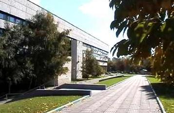

Klinika Odtwórczej Neurologii Interwencyjnej i Terapii “Neurovita”

Klinika powstała w maju 2002 roku na bazie Rosyjskiego Onkologicznego Centrum Naukowego Rosyjskiej Akademii Nauk Medycznych pod kierunkiem prof. A.S.Briuchowieckiego. Wyróżniającą osobliwością Kliniki jest wdrażanie i wszechstronne wykorzystanie nowych wysokich technologii medycznych w diagnostyce i leczeniu ciężkich postaci schorzeń oraz urazów układu nerwowego.
Połączenie specjalistycznego badania klinicznego z nowoczesnymi metodami rentgenokontrastowymi umożliwiają lekarzom Kliniki z dużym prawdopodobieństwem w krótkim czasie zdiagnozowanie najbardziej skomplikowanej patologii mózgu i rdzenia kręgowego oraz obwodowego i autonomicznego układu nerwowego. Do dyspozycji naszych pacjentów jest cała potęga diagnostyczna i lecznicza jednej z najlepiej wyposażonych instytucji medycznych Rosyjskiej Akademii Nauk Medycznych.
Do chwili obecnej wiarygodnie stwierdzono, że w 44% przypadków stosowania metodyk w Klinice udaje się przywrócić zaburzone czynności w skrajnie ciężkich przypadkach pacjentów z poważnym morfologicznym ubytkiem rdzenia, a stosowanie ich w przypadku urazu mózgu/rdzenia pozwoli obniżyć śmiertelność i ciężkie inwalidztwo praktycznie trzykrotnie.
Wszystkie świadczone w Klinice usługi, stosowane metody i technologie są dozwolone przez Ministerstwo Zdrowia FR, mają licencje i atesty, potwierdzone unikalnymi patentami i wynalazkami.
Zródło:
Wywiad z prof. A.S.Briuchowieckim